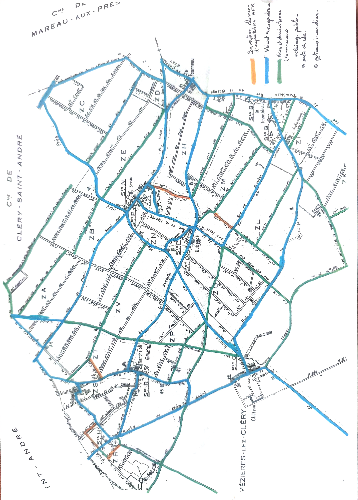

Lecture simple de la carte fournie par l'association, avec affichage par type de voie.

Image source à ajouter
Le fichier HTML est prêt. Pour que la carte s'affiche ici, enregistrez simplement l'image que vous m'avez envoyée dans le même dossier que ce fichier, sous le nom carte-voies-mezieres-v1.png.
Note
Affichage documentaire V1. Les couleurs peuvent être masquées individuellement pour mieux lire le réseau.